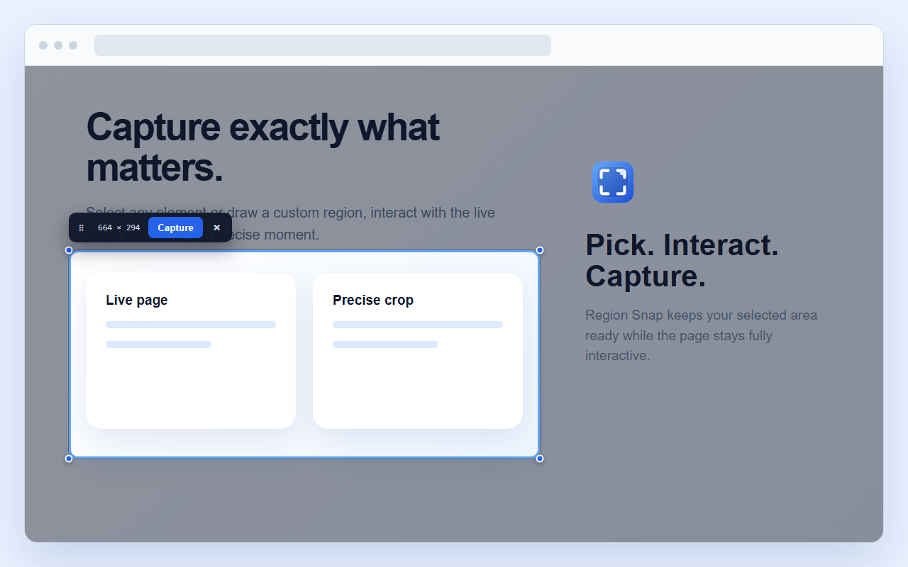

Precise selection
Click an element or drag a free-form region, then resize down to the real pixel.
Screenshots for Chrome and Windows
Capture precise regions from Chrome or across a multi-monitor Windows desktop. Everything stays on your device and exports as a local PNG.

Click an element or drag a free-form region, then resize down to the real pixel.
The page underneath stays fully interactive after the region locks in place.
Type text notes and drop numbered step marks 1, 2, 3… right onto the shot.
Highlight a line without hiding it, and draw marks in red, yellow, green, blue or black.
Capture a whole chat thread, list or side panel, or an element taller than the window.
Take a quick series of shots, or save the region each time its content changes.
No analytics, ads, telemetry, tracking scripts, or external image service.
Select across monitors with mixed DPI, then save and copy a fresh desktop frame.
On Windows, press T while selecting to put the text on the clipboard. English and Vietnamese are read offline.
In the extension, open a file, paste with Ctrl+V or drop an image, mark it with the same tools, then save or copy it at its own size.